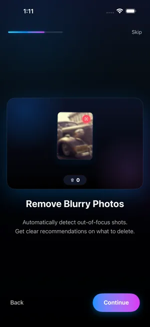

How to delete similar photos on iPhone and keep the best one
Updated · By Mohamed Elatabany
The Photos app can merge exact duplicates, but it has no tool for similar photos: the five takes of one group shot, the burst-like row of sunsets. To delete them you compare the shots yourself and trash the extras, or use an app that groups them and marks the best one. Both ways are below.
What is the difference between duplicate and similar photos?
Duplicates are the same image saved more than once, for example a photo you received in two chats. iOS 16 and later finds those itself in Utilities → Duplicates. Similar photos are different images of nearly the same moment: you pressed the shutter several times and every frame is a little different. iOS does not treat them as duplicates, so no built-in album collects them. If you only have exact copies, the duplicates guide is all you need.
Method 1: delete similar photos by hand in Photos
- Open Photos and tap Select, then scroll to a cluster of near-identical shots. Photos are sorted by date, so frames taken seconds apart sit next to each other.
- Tap a photo to open it, swipe sideways between the frames and pick the keeper. Zoom in on faces: check open eyes and sharp focus, not just the overall composition.
- Tap the heart on the keeper. A Favorite is easy to spot when you tidy up and is protected from a careless sweep.
- Go back to the grid, tap Select, tap (or drag across) the extra frames, then tap the trash icon and confirm Delete.
- Repeat for the next cluster. Deleted photos go to Utilities → Recently Deleted and stay there for 30 days.
On iOS 17 find Utilities by tapping the Albums tab and scrolling down; on iOS 18 scroll below the photo grid; on iOS 26 tap Collections. Apple documents the basics in the iPhone User Guide, "Delete or hide photos and videos".
This is fine for a few dozen clusters. With thousands of photos it means judging every frame yourself.
Is there a built-in way to find similar photos?
No. The Duplicates album only lists copies of the same image, and Photos does not offer a "best shot" pick for near-identical frames. For burst shots it does: open the burst, tap Select, tick the frames you want, tap Done and choose to keep only those (see deleting burst photos). Anything shot one tap at a time is on you.
Method 2: group similar photos and keep the best with Photo Cleaner

Photo Cleaner's Similars / Duplicates finder groups exact copies and near-identical shots, and marks the best one in each group. The analysis runs on your iPhone, nothing is uploaded, and it works offline.
- Install Photo Cleaner and allow Full Access to your photos.
- Open the Similars / Duplicates section. The app collects photos that look the same or almost the same into groups.
- Open a group. The best shot is marked; check it against the others and choose a different one if you prefer.
- Keep the best and send the rest to the Trash Bin. Swiping works too: left to delete, right to keep.
- Open the Trash Bin, recover anything you want back, then empty it. iOS asks you to confirm, and the photos go to Recently Deleted for 30 days.
Nothing is deleted until you confirm in the iOS dialog, so a wrong pick can still be recovered in the Trash Bin or in Recently Deleted.
How do I choose which similar photo to keep?
- People first. Pick the frame where everyone has their eyes open and faces are sharp. A marked "best shot" is a suggestion, so check faces yourself.
- Sharpness. Zoom in; a softer frame is rarely worth keeping when a sharp one exists. See finding blurry photos.
- Edits. Edits are stored with the photo. If you edited one frame, keep that one.
- Favorites. If you hearted a frame, that is the one you meant to keep.
- Different, not similar. Two photos of the same place with different people or poses are two memories. Keep both.
Do I need an app, or is the manual way enough?
If you tidy a few clusters after a trip, the manual method above is enough and costs nothing. An app starts to pay off when similar shots number in the hundreds, because grouping and a marked best shot replace the scrolling and comparing. Start with the built-in Duplicates merge, then deal with similar shots.
How do I get the storage back?
Deleted photos stay in Utilities → Recently Deleted for 30 days and still use storage. Open it (locked with Face ID, Touch ID or your passcode on iOS 17 and later), tap Select → Delete All and confirm. With iCloud Photos on, deletions apply to all devices on the same Apple Account. More in emptying Recently Deleted.
FAQ
Does iPhone have a similar photos finder?
No. iOS 16 and later has a Duplicates album for exact copies only. Similar shots need a manual pass or an app.
Will merging duplicates remove similar photos?
No. Merge only combines copies of the same image and keeps the highest-quality one.
Can I undo deleting similar photos?
Yes, for 30 days: open Recently Deleted and tap Recover. In Photo Cleaner you can also pull photos back out of the Trash Bin before emptying it.
Does Photo Cleaner upload my photos to find similar ones?
No. Everything is analysed on the device, with no account and no uploads.
Is it free?
Photo Cleaner is free to download with 100 free deletions, one time. Unlimited deletions need Photo Cleaner Pro.
Related: delete duplicate photos, delete burst photos, clean up your camera roll fast, mass delete photos.
Try the faster way
Photo Cleaner is free to download, with 100 deletions free, one time.